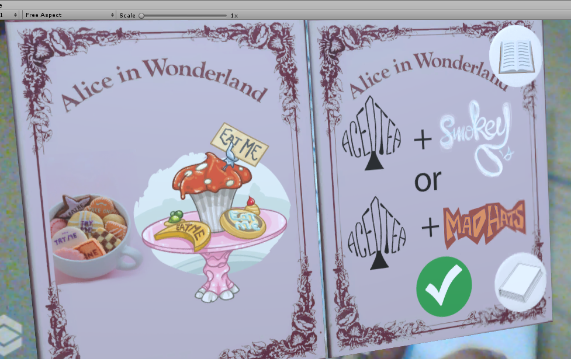

Me and my friend Vani spent 1 month working on augmented reality application to make breakfast more fun. After 1 month of hard work we were able to put together an application which worked quite well. As part of evaluation component Dr. Andrew asked us to review the applications made by others. Now, I am not really good at judging people as its tough for me to put myself into someone else's shoes. So, I wont be able to understand the kind of efforts the other people put into their project. So, as a review I will express how I felt whle using the application and try to give some constructive criticism.
Zaynab and Dona chose the theme of Harry Potter for their augmented reality application. Each cereal box represented one house with their colors, one character,one teacher and one creature as the representative. Each teacher is animated and each character has a sound. These scenes are wonderful to watch and as a childood harry potter fan, there was a feeling of joy to watch those characters come to life again. Following are the couple of snapshots for the same:
The placemats depicted the dining hall and the Quidditch field. The animations and sound effects were spot on. I liked the sound of sorting hat shouting Gryffindor and the animations of Quidditch field were lovely. One could relive the spirit and intesity of the competition that was offered by the game of Quidditch. Following is its screenshot:

The magazines depicted daily prophet and wizarding world advertisments. There were few interesting innovations in the newspaper. First one included the 3d model of Voldermot. The second one included the video of Dumbledore escaping in style. Third page included the animation of a flying car which was the depiction of real event in a 3d model. All of these three depictions are one of the few ways in which our news media industry can evolve. It would be an interesting research study for the design students to find which of these ways would be the best medium for news


The drink cans included Hagrid's hut with Buckbeak and cup of tea. The second drink can converts into butterbeer with hagrid at one side and his scary three headed dog, his tarantula and a dragon at the top. These scenes looked quite bland but were correct depictions from the movie. You cant otally imagine that hagrid would happily hangout with a dragon, tarantula and three headed dog. It will be quite a headache for him to control all those three magnificent beasts but he loves them all the same. Since the image was quite big I was unable to put everything in one snapshot. But you can see Hagrid,half of the dragon, the dog and legs of the tarantula.

To cut to the chase here is my critique. Following are its good points:
Mirko Mantovani chose the theme of Alice in Wonderland for the augmented reality breakfast application. the application features Mad Hatter, Queen and King of hearts, ace gardeneres, a duck , a caterpillar, mushrooms and alot many animals. There are alot of intersting animation sounds as well. Since, this is an individual person project, the number of scenes are less but they are executed with perfection.
The cereal box includes Mad Hats cereal. There is a 3d model of Mad Hatter peeking through and there is a top hat on the top of the cereal box. The animations include little hats revolving around the cereal box. The second box showcased the smokey cheerios. Going through the theme of the mad world of the Alice in wonderwall, there is a head of a cat growing on the top of a mushroom. There is a duck alongside as well. The animation includes the smoke ring particle effect which is very cool to look at. Following are the screenshots of the two boxes. I didnt have the custom created box model so I could not test it.


The drink can depicts Aced tea. On front of the drink there is a weird looing face which throws out cards just like a slot machine. On top of the can there is a floating razor blade which says "Drink Me". There were interesting interactions designed as well that I will cover later in this review. For now, here is its screenshot:

The placemat includes a checkerboard depicting the court of queen and king of hearts. Both king and queen are there in the court. Apart from them, there is a flamingo, a pastry, a pancake and breakfast table and couch. There is enough empty space on the placemat so that user can put things on it and then placemat can react accordingly. Following is its screenshot:

The magazine included the guide to the word of Alice in Wonderland. It included the general instructions to what kind of products matched and what not. I really liked the flipping page animation of the magazine. The buttons to flip the magazine were little counterintuitive. However, it was not that tough to understand and the experience was good. Following is the screenshot of the magazine:
There were alot many interactions designed by Mirko Mantovani. The interactions can be divided into three categories:


This was a well thought out project and perfectly executed. Following I believe were good points:
In the end, I would like to say that I liked the experience of reviewing the applications. I was transported to a completely different world and really enjoyed that journey. From technical perspective, I learnt from the creator's mistake and also found out about the mistakes that I made in my project. At the end of day this assignment made me smarter, more creative and wiser and I hope I will be able to apply my learnings in future projects